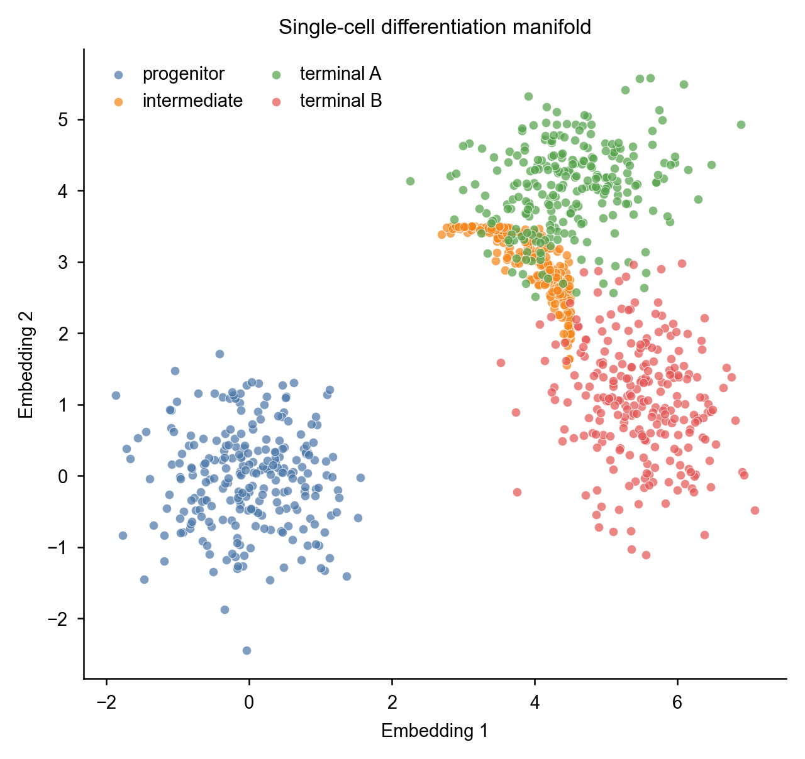
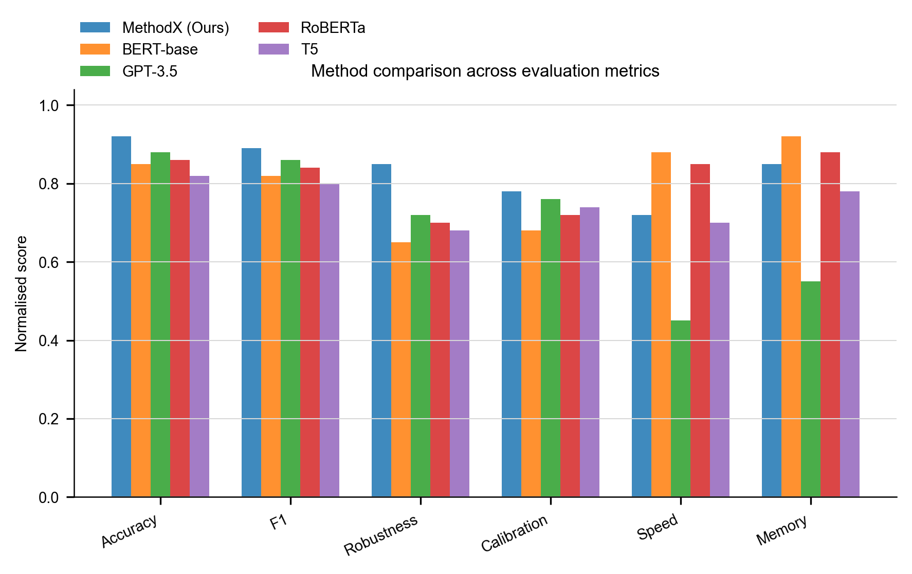

BASELINE baseline_plot.py
conventional 2D embedding scatter coloured by cluster (default approach)

CANDIDATE candidate_plot.py (skill loaded)
manifold trajectory + pseudotime gradient + bifurcation marker + inline terminal labels

Hypothesis: when data has natural manifold or N×M comparison structure, candidate (skill loaded) picks the right FORM (manifold / radar) while baseline defaults to conventional scatter / bar. This validates that the figure-aesthetic-exemplars skill encodes form-novelty as a portable rule, not just colour discipline.

